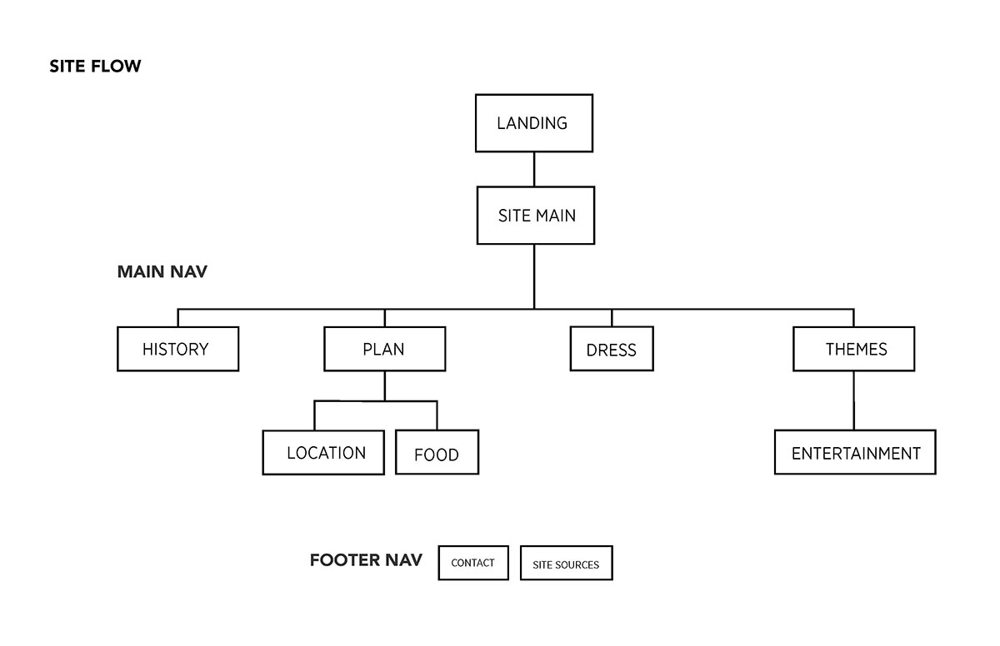

Quince
PROBLEM STATEMENT
Piecing together a site in a short amount of time can be difficult. Pick a topic that people may be interested in learning more about. By developing style guides and templates you can now bring a topic and site together in a short amount of time.
The purpose of the site is to help girls plan their fifteenth birthday party. A Quincenera is a very special occasion for those of hispanic and latino heritage. This day is very similar to planning a wedding however there are actual theatrical elements and entertainment involved. Many sites on the web right now feel cluttered and really content heavy. My hopes is to clear up the information by only showing select and curated content however allowing for users to explore beyond the site as well.
THE NOT SO CLEAR SOLUTION
This was a difficult assignment for me in that my vision and end result were not the same. Having to also learn html and css along side this course I found myself steps away from my some of classmates. I will say that I developed a better understanding of how to approach problem solving through this project.
I began my process with researching existing sites that would be in the same market frame. I then began to pull a look and feel as well as a few style styles. After developing a look I started to sketch out how each page would look within a templated approach. Although my actual site is very basic and has some errors I think that its quite successful in teaching me to design first the template of the site and then add in the design.
TOOLS USED
- HTML
- CSS
Wireframes
The Site
STYLE TILE THEME
STYLE TILE TEXT
SIMPLE SITE MAP
STYLE A - LANDING PAGE